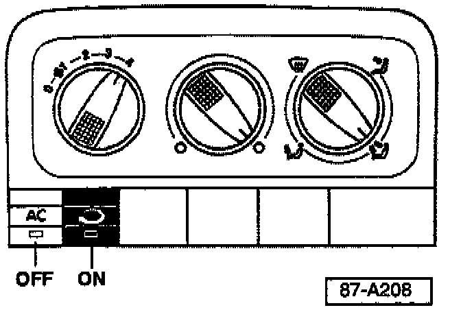
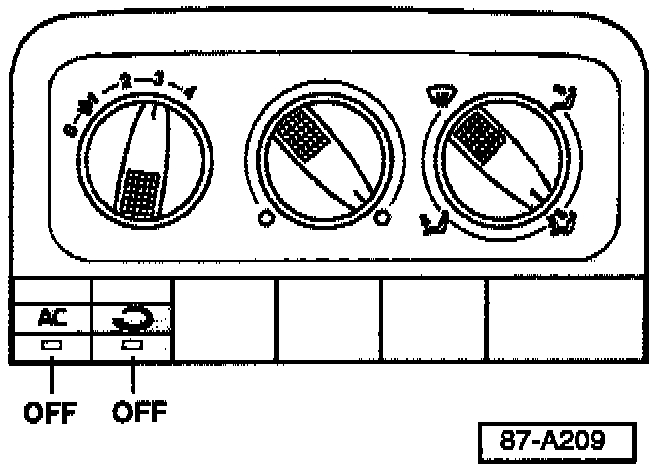

Vehicle Preparation
- Cover all seats and cover carpeting below passenger side instrument panel.- Remove right side plenum cover, clean any accumulation of debris (leaves, twigs etc.).
- Remove air intake adapter, pollen filter (if equipped).
- Place a catch basin below condenser drain.
CAUTION
Take care not to damage seal when removing air intake adapter.

Set Fresh air/heating controls as follows:
^ Temperature control knob to full hot
^ Fresh air blower to high speed (position 4)
^ Air distribution on bi-level (footwell and central A/C ducts)
^ A/C switched OFF
^ Recirculating flap switched ON
- Open all windows and tilt sun roof (if equipped) to approx. 1/2 in. (1 cm).
- Start engine and run engine for approx. 30 minutes.
After 30 minutes: system should be dry (free of any moisture).
Note:
If system is not fully dried, Airsept(R) will wash away with newly formed condensate.

Set Fresh air/heating controls as follows:
^ Temperature control knob to full hot
^ Fresh air blower to third speed (position 3)
^ Air distribution on bi-level (footwell and central A/C ducts)
^ A/C switched OFF
^ Recirculating flap switched OFF